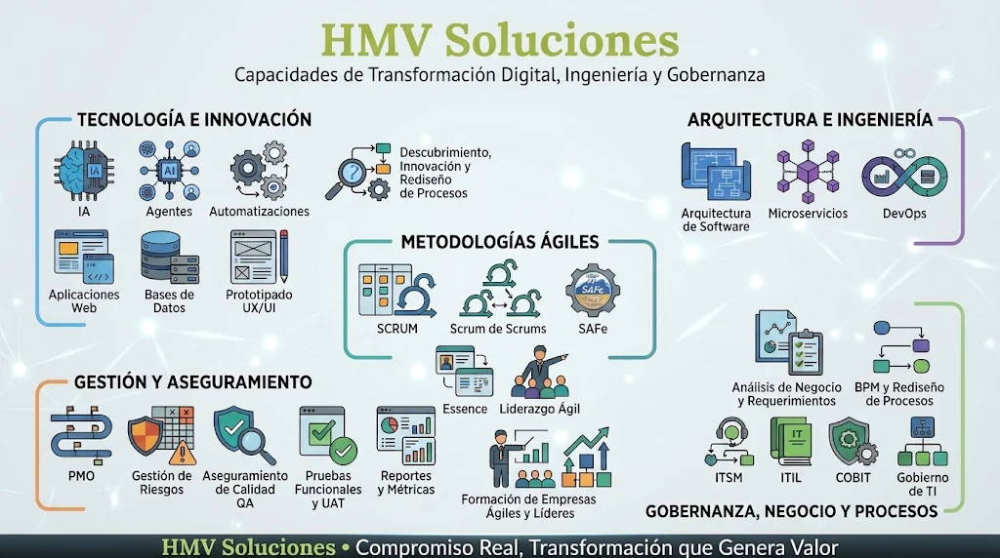

Dónde se pierde margen, tiempo y confianza — y qué accionar en los próximos 30 días.
Preparado por HMV Soluciones · Noviembre 2026 · Dirección General
33
procesos documentados
0
implementados
8
macroprocesos · 4 críticos
01 · Resumen ejecutivo / la tesis
La operación creció. El modelo operativo, no.
CTC compite a escala nacional y regional. Pero la operación se sostiene con Excel, Drive, correo, memoria y en las personas: 33 procesos documentados y 0 implementados.
01 · Lo que ya no escala
Más operación. Lo que antes se resolvía con coordinación local ahora es un cuello de botella.
02 · Lo que cuesta
30 horas extras por persona, facturación manual, inventario sin control e información que llega tarde.
03 · Lo que falta
Un modelo operativo: responsabilidades con rol, procesos aprobados, gobierno de TI e información confiable y precisa.
04 · Lo que se juega
Margen, cumplimiento de niveles de servicio y capacidad de crecimiento sostenido y balanceado.
33
procesos documentados
Diseño To-Be, versión 0.1
0
implementados
Ningún proceso firmado
30h
extras por persona
Síntoma de sobrecarga
3
almacenes
MTY · GDL · CDMX
Resultado esperado
Reducir riesgo operativo · incrementar eficiencia · mejorar la experiencia del cliente · priorizar inversiones de alto impacto.
02 · El diagnóstico / una frase
“No es falta de demanda. Es falta de estructura.”
Hallazgo HMV · 8 macroprocesos identificados, reunión de levantamiento y notas de campo
Volumen
El incremento de la demanda supera la capacidad de atención disponible, afectando la eficiencia operativa, generando retrasos.
Complejidad
Operación en 3 países, incremento en las líneas de servicio, tres almacenes, gestión de flota, facturación manual y centro de operaciones 24/7.
Dispersión
Excel, Drive, correo y WhatsApp. La información existe, pero no se puede consultar ni auditar.
El resultado: más retrabajo, más riesgo, menos margen. No es falta de presupuesto, talento ni tecnología.
10 % visible · síntomas90 % estructural · causas
03 · Cadena de valor / eTOM
La cadena de valor de CTC, proceso por proceso.
Alineada a eTOM, el modelo estándar de procesos para telecom. Los 33 procesos documentados ya embonan en estas seis etapas. Seis etapas de la cadena de valor; en el mapa eTOM, cada proceso vive en uno de ocho dominios.
Dirección
Planeación estratégicaGobierno corporativoGestión financieraGobierno de TI
Mercado y venta
Comercialización
COM-001 · 002 · 003
Lead, oportunidad y propuesta.
Producto y oferta
Diseño e ingeniería
ING-001 · 002 · 003
Factibilidad, solución y capacidad.
Cumplimiento
Aprovisionamiento
ENT-001 · 002 · REC-001
Pedido, recursos y proveedores.
Aseguramiento
Operación
OPS-001 a 005
Ejecución, seguimiento y cambios.
Cliente
Atención y soporte
COM-004 · OPS-002
Incidentes, niveles de servicio y experiencia del cliente.
La madurez se mide con evidencia, no con documentos. Cuatro procesos concentran el riesgo operativo y la decisión de inversión.
Nota: este análisis se basa en un primer levantamiento de necesidades, no en una evaluación completa ni definitiva; se ajustará en la medida que se recabe más información.
Macroproceso
Madurez
Riesgo
Prioridad
Evidencia
Comercial
2/5
Medio
Alta
CRM no funcional; propuestas y seguimiento en Excel.
Ingeniería
2/5
Alto
Alta
Inventario de almacén en implementación; inventario de red y configuración pendientes.
Aprovisionamiento
1/5
Alto
Crítica
Tres almacenes; salidas sin control; resurtido manual.
Operación
2/5
Medio
Alta
El centro de operaciones calcula topología e IPs a mano.
Atención a Clientes
1/5
Alto
Crítica
Tickets en Drive; acuerdos de servicio sin dato.
Facturación
2/5
Alto
Alta
Facturas manuales; Aspel NOI; cobranza manual.
Gobierno TI
1/5
Muy alto
Crítica
Procesos objetivo documentados, sin implementar; función vacante.
Seguridad
1/5
Muy alto
Crítica
Sin protección de datos: todos acceden a todo; sin roles ni permisos.
AprovisionamientoTres almacenes; salidas sin control; resurtido manual.
Atención a ClientesTickets en Drive; acuerdos de servicio sin dato.
Gobierno TIProcesos objetivo documentados, sin implementar.
SeguridadSin roles, permisos ni protección de datos.
Escala de madurez: 1 = incipiente · 5 = optimizado. Valoración HMV sobre evidencia documental.
Crítica: Aprovisionamiento · Atención · Gobierno TI · Seguridad.
05 · Madurez / diseño vs. ejecución
El diseño está. La decisión, no.
33 procesos documentados, 0 implementados. Hay iniciativas en marcha, pero no un modelo de ejecución y gobernanza.
33
procesos documentados
0 implementados
Aprobación formal
0 %100 %
Implementación formal
0 %100 %
0ImplementadosSin operación formal
0Flujos modeladosSin diagrama
0Modelo de datosSin entidades ni claves
0InterfacesSin contrato de integración
0Línea baseSin diagnóstico actual
0Titular de gobierno TIFunción vacante
Lo que ya existe
Ingresos altosoperación rentable
Inversiónen mejora continua
2iniciativas activas
Red propiacobertura y clientes
Iniciativas activas: inventario de almacén en implementación y tablero de control. Hay avance, pero no sistema. Sin procesos aprobados, el conocimiento vive en las personas: se va una persona, se va el proceso. Y el costo — horas extras, fuga de ingreso, retrabajo — no está en el presupuesto, pero se paga todos los meses.
06 · Decisión tecnológica / proceso primero
La herramienta no arregla el proceso.
Una herramienta comprada antes de rediseñar el proceso termina igual que las que ya no se usan: costó, no se adoptó y no cambió el resultado.
La regla
Proceso primero, dato después, herramienta al final. La tecnología correcta no compensa un proceso que nadie decidió.
Implementación apresurada
Mismo destino que las herramientas que ya no se usan. Sin proceso, la herramienta solo digitaliza el desorden.
ERP
El sistema administrativo de la empresa.Facturación, compras, contabilidad y almacén en un solo lugar. Registra lo que se decidió; no decide cómo se trabaja.
OSS
Los sistemas que gobiernan la red.Inventario de fibra y equipos, configuración y monitoreo. Sin inventario de red, el OSS no tiene qué gobernar.
Regla de oro: si la herramienta no cambia una decisión, un costo o un tiempo, no es transformación: es un gasto.
La mayoría de estos dolores no se resuelve comprando un ERP: se resuelve con datos, procesos y gobierno. El ERP solo hace visible la mejora.
07 · Los 6 marcos / qué hace cada uno
Seis marcos. Un solo método.
Nada de siglas sin traducir: cada marco dice qué hace, qué le da al CEO y qué produce. El detalle vive en el tablero Excalidraw.
eTOM
El mapa estándar de procesos de telecom: qué procesos existen y dónde vive cada uno.
Para el CEO: ningún proceso sin dueño ni lugar. Produce: 33 procesos en 8 dominios.
TOGAF 10
El método para diseñar la arquitectura de la empresa: del estado actual al objetivo, por iteraciones.
Para el CEO: cada peso en tecnología tiene un plano antes de gastarse. Produce: arquitectura objetivo + plan de migración.
Scrum@Scale
La cadencia de coordinación: reunión diaria de 15 min (SoS) y comité quincenal (EAT).
Para el CEO: los 32 saben cada día qué está atorado y quién decide. Produce: decisiones semanales, no mensuales.
Kanban
El trabajo visible en un tablero: qué está en curso, qué está atorado, cuánto tarda.
Para el CEO: ver el flujo sin pedir reportes. Produce: lead time y throughput medidos.
ITIL
La operación del servicio con disciplina: incidentes, problemas, cambios y mejora continua.
Para el CEO: un incidente no depende de a quién se le ocurra llamar. Produce: incidentes y cambios con responsable y registro.
ISO/IEC 42001
Las reglas para usar IA con control: riesgos, controles y supervisión humana.
Para el CEO: la IA ayuda sin poner en riesgo datos ni clientes. Produce: piloto de IA con revisión humana.
08 · Solución híbrida / la oferta tecnológica
Resultados en 30 días. Escala en 12 meses.
No apostamos a una sola herramienta. Combinamos acción inmediata, inteligencia artificial, software a medida e integraciones para atacar lo crítico sin frenar la operación.
Acción inmediata
01
Jira
Tickets, proyectos y acuerdos de servicio en semanas, no en meses.
Primer resultado en 30 días
Procesos críticos
02
Agentes de IA
Clasificación, atención, resúmenes y decisiones asistidas con control humano.
Menos tiempo operativo
Procesos normalizados
03
Software
Donde el producto no encaja: red, inventario y flujos específicos.
Diferenciación real
Todo conectado
04
Integraciones
Software, Operaciones, red y datos hablando el mismo idioma.
Una sola verdad
30 díasFlujo visibleJira en los 2 procesos críticos.
60 díasPiloto de IA operandoTriaje y clasificación con revisión humana.
12 mesesEscala por olasSoftware a medida e integraciones donde aportan.
No es una promesa: es una secuencia. La tecnología correcta, en el proceso correcto, en el orden correcto.
09 · Propuesta 1 / 8 semanas, con compuertas
Propuesta 1: ocho semanas. Cinco fases, cinco salidas.
Cada fase cierra con una salida verificable; si no se cumple, no se avanza. Es el arranque: la Propuesta 2 se decide en el corte de la semana 8.
Fase 0
Gobernanza mínima
Matriz de decisión
Datos en 3 niveles
Plan de gobernanza
Semana 0 · 3–5 días
Fase 1
Diagnóstico
Cuestionario, 32 personas
VSM de operación
Datos del piloto limpios
Semanas 1–2
Fase 2
Flujo visible
Kanban en Jira, 2 procesos
Importación vía CSV
Límites de WIP
Semanas 3–4
Fase 3
Ritmo y coordinación
SoS diario (15 min)
EAT quincenal
Portal de procesos
Semanas 5–6
Fase 4
Medición y piloto IA
Lead time y throughput
Túnel de trabajo
Piloto IA: triaje
Semanas 7–8
Salida 0Plan aprobado y dueño nombrado
Salida 1Diagnóstico con hallazgos priorizados
Salida 2≥70 % del trabajo en Jira
Salida 3SoS y EAT con cadencia
Salida 4Línea base + piloto IA operando
El pase a pruebas (QA) se pausa hasta que la fase 0 cierre. Sin procesos y datos aprobados, la herramienta hereda el problema.
En palabras llanas: Jira es el tablero donde vive el trabajo; Kanban es ver el trabajo en ese tablero; VSM es el mapa del flujo real de un proceso; WIP es cuánto trabajo hay en curso a la vez; lead time es cuánto tarda un trabajo de principio a fin; throughput es cuántos trabajos se terminan por semana; el túnel de trabajo es la cola priorizada — lo que entra, se analiza y se aprueba; SoS es la coordinación diaria de 15 minutos entre equipos; EAT es el comité quincenal que prioriza el trabajo.
Corte de la semana 8: Jira ≥80 % (desde ≥70 % en la semana 4), lead time medido, 1 piloto IA operando. Ahí se decide la Propuesta 2.
10 · Propuesta 2 / 12 meses, el camino completo
Propuesta 2: doce meses. El modelo operativo completo.
La Propuesta 1 es el arranque; esta es la implementación completa: los 33 procesos definidos a Nivel 3 de detalle, con transferencia al equipo interno de CTC.
Mes 1–4
Cimentar
Equipo de 32 organizado: dueños de proceso nombrados según RACI y capacitados
eTOM Nivel 3 en 6 procesos (Arquitectura empresarial)
ITIL: incidentes y solicitudes, con catálogo de servicios (Operación)
IA: inventario de usos y riesgos evaluados (Servicios)
Salida: 6 procesos en Jira con SLA medidos
Mes 5–8
Escalar
eTOM Nivel 3 en los 33 procesos (Arquitectura empresarial)
Kanban en todos los procesos, con límites de trabajo en curso (Operación)
ITIL: problemas, cambios y niveles de servicio operando (Operación)
IA: controles del Anexo A y segundo piloto (Servicios)
Salida: 33 procesos con Nivel 3 y métricas de flujo
Mes 9–12
Sostener y transferir
Mapa y catálogo vivos en el Portal de procesos (Arquitectura empresarial)
SoS y EAT con presidencia interna (Operación)
IA: auditoría interna y triaje en producción plena (Servicios)
ERP: decisión en mes 10–12 (Arquitectura empresarial + Servicios)
Salida: el equipo interno de CTC opera sin HMV
HMV cubre tres frentes: arquitectura empresarial, operación y servicios. Equipo interno de CTC: 32 personas.
Mes 13–18 (opcional): implantación del ERP sobre lo ya normado — fuera del compromiso de 12 meses.
Transferimos capacidad, no creamos dependencia.
11 · Por qué HMV / un solo equipo
Ejecutamos. No solo diagnosticamos.
Un solo equipo, un solo plan, un solo responsable: CTC no orquesta proveedores. La diferencia entre un informe y un modelo operativo es quién se queda a implementarlo.
Ejecutamos y asesoramos
No entregamos un informe y nos retiramos. El equipo de HMV implementa, capacita y acompaña.
Un solo equipo
Procesos, personas, datos y gobierno en una sola mirada. Jira, automatización, portales e IA trabajando como un solo sistema, no como piezas sueltas.
IA con gobernanza
No vendemos IA como espectáculo; instalamos gobernanza para que la IA sea posible y segura.
Transferencia de capacidad
Cuando HMV se retira, CTC opera, capacita y mejora por sí mismo. Los sistemas desarrollados a medida son de CTC.
El éxito del proyecto se mide cuando CTC ya no nos necesita.
12 · Equipo y supuestos / quién hace qué y qué se necesita
El equipo, y lo que CTC pone.
HMV cubre tres frentes: arquitectura empresarial, operación y servicios. Del lado CTC, el equipo son 32 personas; dos roles dedicados son condición, no preferencia.
Frente HMV
Responsabilidad
Arquitectura empresarial
Procesos y arquitectura: VSM, eTOM, estandarización, mapa de fricción y plan de migración.
Operación
Jira y ritmo: tableros, importación, permisos, métricas de flujo, SoS y EAT, ITIL.
Servicios
Datos e IA: capacitación, gestión de resistencia al Excel, política de IA y gobernanza de datos.
Del equipo de 32 de CTC, dos roles dedicados son condición: 1 dueño operativo del tablero y 1 capturador/analista de evidencia en campo para instalaciones. Sin estas dos personas, el cambio se cae al mes 3.
Supuestos
CTC proporciona acceso a los Excel y a las personas clave para el VSM.
El CEO asiste al EAT quincenal o delega con autoridad de decisión.
Jira Cloud es viable tras la clasificación de datos de la Fase 0.
CTC comparte su estructura organizacional (para nombrar dueños de proceso y mapear responsabilidades).
Exclusiones
Licencias de Jira (por separado).
Integraciones con ERP/CRM existentes (se evalúan en Fase 2).
Implementación completa de eTOM (solo vocabulario en esta fase).
Automatizaciones fuera del piloto acotado de IA.
Software desarrollado a medida (fuera del arranque de 8 semanas; corresponde a la escala de 12 meses).
13 · Decisiones / lo que se pide al CEO
Cinco decisiones.
No se pide aprobar un proyecto: se piden cinco decisiones concretas con fecha y responsable.
1
Aprobar la fase 0: gobernanza mínima y arranqueMatriz de decisión, datos clasificados y plan de gobernanza.
2
Nombrar responsables de proceso, dato y gobierno de TIUn nombre por proceso y por dominio de dato.
3
Liberar 25–40 % del tiempo de los responsables de proceso y usuarios claveDurante las 8 semanas del arranque; se revisa en el corte de la semana 8.
4
Mandatar una sola fuente de verdadExcel deja de ser sistema; vuelve a ser herramienta.
5
Aprobar el piloto de IA en la fase 4 y el comitéTriaje y clasificación con revisión humana, en paralelo a la operación.
Opción de arranque reducido: solo Fase 0 + Fase 1, y decidir con el informe de diagnóstico en mano. La cotización se ajusta al corte.
La fecha de arranque es una decisión: la Fase 0 arranca en la semana siguiente a la aprobación del CEO.
Cierre
El siguiente paso no es comprar más software. Es construir el modelo operativo de CTC.
Procesos, datos y gobierno primero. Tecnología después. Resultados en 30 días, escala en 12 meses.
Todo queda en el Portal de procesos: el mapa vivo donde vive la operación de CTC.
Siguiente paso
Arrancar la Fase 0 en la semana siguiente a la aprobación del CEO.
Flujo visible en 30 días. Piloto de IA en 60 días.
×
Anexo A · Procesos en eTOM / dónde embona cada uno
33 procesos. Un solo mapa.
Cada proceso documentado tiene un dominio principal en eTOM (Enhanced Telecom Operations Map). Los 5 mapas de referencia (MOP-001 a 005) complementan el modelo: 33 procesos.
Mercado y venta · Market/Sell
COM-001Gestión de oportunidades
COM-002Cuentas corporativas y renovaciones
COM-005Propuestas y negociación
Producto y oferta · Product/Offer
PRD-001Catálogo y ciclo de vida
PRD-002Costeo, precios y margen
Cumplimiento · Fulfillment
COM-003Contratación y pedidos
ENT-001Pedido a activación
ENT-002Proyectos y aceptación
ING-001Factibilidad y diseño
ING-003Inventario lógico de red
Aseguramiento · Assurance
OPS-001Incidentes y escalaciones
OPS-002Cambios y configuración
OPS-003Problemas y causa raíz
OPS-004Acuerdos de servicio y continuidad
OPS-005Monitoreo y alarmas
ING-002Capacidad y expansión
Facturación · Billing
FAC-001Facturación recurrente
FAC-002Cobranza y cartera
FIN-001Tesorería y pagos
FIN-002Contabilidad y cierre
Cliente · Customer
COM-004Atención y experiencia
Empresa · Enterprise
GOV-001Gobierno y facultades
GOV-002Calidad y auditoría
GOV-003Riesgos y continuidad
GOV-004Planeación y presupuesto
SIS-001Gobierno de sistemas
SIS-002Seguridad y accesos
SIS-003Aplicaciones e integraciones
RH-001Capital humano
JUR-001Contratos y regulación
JUR-002Protección de datos
Proveedores · Supplier/Partner
REC-001Compras y aprovisionamiento
REC-002Almacenes y activos
El dominio es el principal; algunos procesos apoyan más de uno.
Anexo B · Alcance y entregables / qué se entrega y cómo se verifica
Alcance por fase. Sin letra chica.
Cada fase cierra con una salida verificable. Si la salida no se cumple, no se avanza a la siguiente.
Fase
Tiempo
Entregables
Criterio de aceptación
Fase 0 — Gobernanza mínima y arranque
Semana 0 (3–5 días)
Matriz de decisión (quién prioriza, quién aprueba). Clasificación de datos en 3 niveles. Plan de gobernanza completa (datos + IA + normativa) en diseño.
CEO aprueba el plan y nombra dueño operativo CTC.
Fase 1 — Diagnóstico
Semanas 1–2
Cuestionario aplicado a 32 personas clave, con análisis. VSM de operación e instalaciones. Mapa de fricción y dispersión de datos. Datos del proceso piloto limpios y validados.
Informe de diagnóstico con hallazgos priorizados.
Fase 2 — Flujo visible
Semanas 3–4
Tablero Kanban en Jira para 2 procesos críticos. Importación de Excel vía CSV. Límites de WIP. Vista unificada para el CEO. Capacitación en flujo real arrancada.
≥70 % del trabajo activo de los 2 procesos vive en Jira.
Fase 3 — Ritmo y coordinación
Semanas 5–6
Eventos Scrum selectivos operando. SoS diario (15 min). EAT quincenal. Portal de procesos con procesos documentados.
SoS y EAT con cadencia sostenida; retrospectivas con acciones ejecutadas.
Fase 4 — Medición y piloto IA
Semanas 7–8
Lead time, throughput y WIP medidos por primera vez. Túnel de trabajo (lo que entra → se analiza → se aprueba). Piloto de IA: triaje y clasificación de solicitudes entrantes, con gobernanza aplicada.
Línea base de métricas documentada. Piloto IA funcionando en paralelo, con revisión humana.
Corte — Semana 8
Semana 8
Informe de cierre con evidencia de cambio.
Jira ≥80 %, lead time medido, 1 piloto IA operando.
El piloto de IA no es condicional: la limpieza de datos es entregable de la Fase 1, no un supuesto. SoS: coordinación diaria de 15 min entre equipos. EAT: comité quincenal que prioriza el túnel de trabajo.
Anexo C · Capacidades HMV Soluciones

Capacidades de transformación digital, ingeniería y gobernanza.
Anexo D · Brechas transversales / personas · procesos · tecnología · datos
Cuatro cortes. La misma herida.
Personas
Roles y responsabilidades difusos.
Dependencia de conocimiento individual.
Resistencia a más controles.
Horas extras que se salen del presupuesto.
Riesgo: se va una persona, se va el proceso.
Procesos
Actividades manuales.
Falta de estandarización.
Retrabajo y reprocesos.
Riesgo: cada quien lo hace a su manera.
Tecnología
Información dispersa.
Integraciones limitadas.
Herramientas que terminan sin usarse.
Riesgo: se paga licencia, no resultado.
Datos
Información dispersa.
Indicadores difíciles de obtener; dependen de una revisión manual de un día.